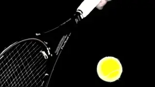
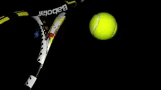
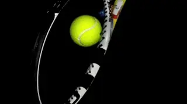
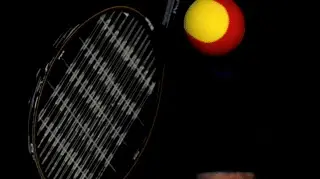
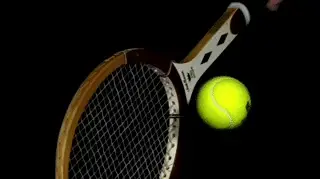
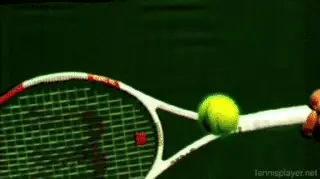
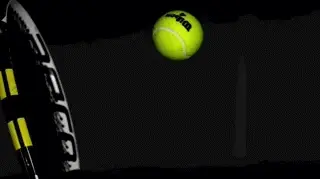
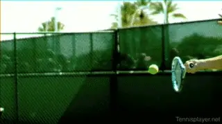

Contact at 10,000 Frames Per Second
Paul Hamori, MD

How long is contact really?
In my new book, The Art and Science of Ball Watching (link) I explored Roger Federer's unique ball watching technique. The book is aimed at finding a methodology to learn how to see contact--in as much as this is possible within the limits of physiology and nerve transmission speed. (link to see an article on TPA, based on the book.)
But in the course of writing the book I also became very interested in the mechanics of racket to ball contact. How long is contact really and do different strings and tensions affect the length of contact?
Could changes in the length of contact be an explanation for the rise in ball speed and spin on the forehands in pro tennis? And another question--how does that apply to the rest of us?
Rafael Nadal has averaged over 3500rpm on his forehand over his career, substantially higher than most players of his generation. But current younger players have equaled or exceeded that. At the same time, they have increased maximum forehand speeds to supersonic levels.
A study done for TPA by Jim Fawcette found a forehand by Matteo Berrittini that measured 129mph at 3930rpm. Alexander Zverev posted similar numbers, hitting a forehand at an unbelievable 136mph with 3700rpm of spin. (link to read Jim's pioneering study.) Could any of that be related to contact times?

Do different strings and tensions affect contact time?
Conventional Wisdom
Sources I had used for the book were fairly uniform in suggesting that contact occurs in about 5 milliseconds. In his book the Physics and Technology of Tennis, the most respected reference book on the subject, Howard Brody sites the 5 millisecond duration.
To put that in perspective, divide a second into 1000 equal segments, take 5 of them. That is the length of contact. For comparison, a blink of the eye takes about 200 milliseconds--40 times longer than ball contact.
So 5 milliseconds is very fast. And everything about your entire shot is determined in that small fraction of a second.
The 5 millisecond conclusion cited by Brody was based on high speed video at 2400 frames per second from the University of Shefield, England. These researchers took a tennis racket and clamped the head of the racket in a fixed position.
Then using a ball machine, they fired a ball at the racket at 90 miles an hour, at a 90 degree angle, straight into the string bed.
This was meant to stimulate a tennis stroke, but doesn't take into account racket, hand, wrist, and forearm flexibility, pronation, rotation, and the angle of incidence.
Real Life

Decreasing string tension increased contact time by 20%.
I hypothesized that these factors might lead to different numbers when contact was studied under real life circumstances---a moving ball and an accelerating racket held by a human arm. So I decided to perform my own measurements.
I also was interested in whether or not contact time would vary with different rackets, string types and tensions, including with one of my training techniques developed for the book using a rally ball and a spaghetti strung racket.
What are spaghetti strings? A stringing method now illegal on the tour that increases spin values tremendously. link to read John Speakman's great story on what spaghetti strings are, how they were developed, and why they were eventually banned.
In the book I estimated that a rally ball doubles the contact time, and a spaghetti racket with a rally ball doubles that again. Those were gut feeling estimates and I wanted some hard science on it.
I also wanted to investigate the new trend toward ultralow tension stringing. A substantial number of pros now are stringing rackets at or below 50 pounds, and a few even below 40 pounds.
Is it possible these tensions create a longer contact with the ball? What would it mean to get the strings to work on the ball 20- 30% longer?

A rally ball and spaghetti strings extends contact time by more than twice.
High Speed Videography
In order to get data on the subject, I needed high-speed videography. As luck would have it, I found an expert locally who had an array of high-speed video cameras and lenses, and appropriate lighting--all of which are requisite for high quality video and photos at high frame rates.
The camera we used was a Phantom flex 4K model which retails for $110,000--definitely out of my price range. On top of that, high-speed lenses and high intensity lights are required. And of course, the expertise to set it all up and operate the equipment and understand how to edit the videos into a useful format. This was not a do-it-yourself project.
I keep all of my old rackets, so I took 6 of them out of the closet. 2 Wilson wood rackets. 3 graphite Wilson Pro Staffs: an 85 square inch, a 95 square inch, and Roger Federer Autograph 97 square inch. And my current racket, a Babolat Aero Pro Drive. The strings and tensions used in the various rackets are detailed in the chart below.
Brand new Wilson extra duty balls were opened at the time of shooting. The balls were fired by a ball machine at a comfortable rally speed for a 4-4.5 player.
Then the pressure was on. I had to hit forehands, forehand volleys, and serves under the brightest of lights with half of my club's beady eyes upon me. It gave me a newfound respect for what actors go through.

With all rackets and string variations the ball pocketed rather than sliding.
Results
So what did I find? First, with all the rackets and string variations, the slow-motion film really showed how the ball pockets deeply in the string bed with an absence of any real sliding on the face of the racket--contrary to what many believe and also to what I had expected.
The ball squashes down to about half of its normal size. Upon exiting the strings, the ball oscillates like a piece of jello, becoming almost oblong before regaining its spherical shape.
In the High Speed Archives, there are dozens of examples of these collisions on balls hit by pro players, also shot with super high frame rates. (link.)
You can also see torqueing or twisting on the frames of the wood rackets, consistent with how you feel them bending as you stroke the ball. I also was amazed by the amount of string bed oscillation after the stroke--5 or 6 cycles of vibrating to and from.

A forehand from the High Speed Archive at 10,000 frames a second.
What did the video reveal? The table below summarizes the results of contact times. Not all the data fit perfectly, but in general terms contact turned out to be significantly shorter than the generally published figure of 5 milliseconds. They were closer to 4 milliseconds .
So, for normally tensioned rackets contact time was 20% lower than the published figure. But lowering tension significantly increased the contact time, by as much as 20% more.
A 20% increment is huge in any sport. In tennis that's the difference between a 100mph serve and a 120mph serve. So, the extra contact time had to be making a difference in terms of ball flight characteristics off the racket.
Rally Ball
As I suspected the rally ball had almost double the contact time of a regular ball with a regular racket, 7.3 milliseconds versus 4.1 milliseconds. And the rally ball plus the spaghetti strung racket had the longest contact time---an amazing 9.1 milliseconds, 2.5 times more than the shortest contact time with a regular racket and ball.
Regular Ball Contact Times
Racket String and Forehand Forehand volley Serve Tension contact contact time contact time time Babolat Aero RPM Blast, 67 lbs 3.8 ms 3.75 ms 4.0 ms Pro Drive
Babolat Aero RPM Blast, 37 lbs 4.9 ms 4.1 ms 4.0 ms Pro Drive
Jack Kramer Nylon, 54 lbs 4.5 ms
Prostaff
Jack Kramer Gut, 52 lbs 4.5 ms 3.9 ms Autograph
Prostaff 85 RPM Blast, 54 lbs 3.6 ms
Prostaff 85 Gut, 54 lbs 4.5 ms
Prostaff 95 Big Banger, 52 lbs 4.4 ms
Prostaff 95 Gut, 54 lbs 4.6 ms
Prostaff 97 Gut, 54 lbs 4.3 ms 4.1 ms 3.7 ms
Prostaff 85 Spaghetti-strung, 7.0 ms 6.7 ms 5.6 Spaghetti 35 lbs
Rally Ball Contact Times
Racket String and Rally ball Tension contact time Babolat Aero Pro RPM Blast, 67 lbs 7.3 ms Drive
Prostaff 85 Spaghetti-strung, 9.1 ms 35 lbs
The forehand stroke generally had the longest contact time. Volley contact times were slightly shorter than groundstrokes. Serves were slightly shorter than volleys. As an example, using the Wilson Pro staff 97 RF autograph strung with gut at 54 lbs, the forehand contact was 4.3 milliseconds, the forehand volley was 4.1 milliseconds, and the serve was 3.7 milliseconds.

Serve contact times were slightly shorter than forehands or volleys.
Regarding types of string, gut had a longer contact time than poly. With the Wilson Prostaff 85 (the Sampras racket) contact was 3.6 milliseconds with poly versus 4.5 milliseconds with gut. Regular nylon was closer to gut than poly at 4.5 milliseconds in a Kramer wood Pro Staff.
Carry Distance
So how can tennis players use this information? Not just pros, but regular players.
When contact is about 4 milliseconds on average, this translates to a carry distance of about 1 inch. This is the distance the racket moves while the ball is on the strings. So your entire shot is all about the 1 inch that you have the ball on the racket.
Lowering tension from 67 pounds to 37 pounds increased contact time by about 1 millisecond. This translated to another quarter inch or so of carrying time.
Most pros are trending toward 100% poly, though some are using hybrid stringing--gut in one direction, poly in the other. This probably explains why most pros are trending toward lower tension.
They feel they can do more with the ball with the longer contact time. And at the higher ball velocities than in our study, the contact times and carry distances could be even longer.

Carrying distance at 4 milliseconds is about an inch and is longer with lower tensions.
In last month's issue (link) Jim Fawcette describes the incredible velocities and rotation being achieved by current professionals. They are shattering the previous limits.
The 2 biggest hitters were Alexander Zverev and Marco Berettini, as cited above. Zverev uses hybrid stringing at 50.6 pounds, and Berrettini uses poly at 51 pounds.
As I said in the book, rally balls are a great practice tool because they help you hold the ball on the racket almost twice as long as the high-speed video demonstrated. If you are going to warm up in the short court, I suggest doing it with a rally ball. This will allow you to hit your normal stroke, and fine tune your feel for the ball.
I hope you found this information useful. Although you need to be careful about your arm and poly strings, the takeaway is that you can create longer contact times and experiment to see how they influence your ball striking.
Stay Tuned! In my next article I am going to analyze the bounce--at 10,000 frames per second.
I began writing the book that is the basis for this article - The Art and Science of Ball Watching - in August of 2019 and finished it in January of 2021. In a sense, though, I have been working on it since I started playing tennis fifty-five years ago at the age of five. In high school I played four years of varsity tennis in addition to sanctioned USTA junior tournaments. I probably reached a 4.5-5.0 level. I considered playing small college tennis, but by then I was burned out on the sport, and knew that my pre-med studies wouldn't allow time for college tennis.
But tennis was in my blood, and I started playing again with a passion after medical school. During this time, I really started to study the technical aspects of the game.
My idea for the book started out with various technical ideas that I had been kicking around by watching great players over several generations. In the end I came to the conclusion that good racket to ball contact depends on good ball watching. I wrote the book to teach myself how to see racket to ball contact and my hope is it can help you do the same.
3D Serve Wind-up | Biomechanics Index | Bounce at 10,000 FPS